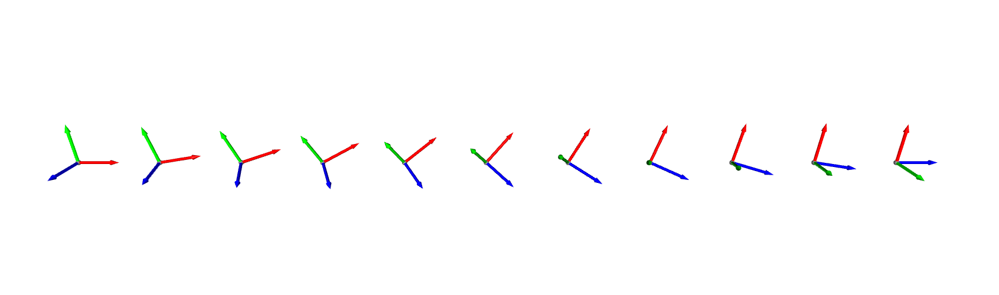

API Documentation
Vectors and Points
- geometric.norm(vector)
Calculate the norm of a given vector.
- Parameters:
vector (list or array-like) – The vector to compute the norm
- Returns:
The norm of the vector
- Return type:
float
- geometric.is_zero_vector(vector)
Check if a given vector is a zero vector within a specified tolerance.
- Parameters:
vector (list or array-like) – The vector to check
- Returns:
True if the vector is a zero vector, False otherwise
- Return type:
bool
- geometric.is_on_axis(vector)
Check if a given vector lies on one of the coordinate axes.
- Parameters:
vector (list or array-like) – The vector to check
- Returns:
A tuple containing
bool: True if the vector lies on one of the coordinate axes, False otherwise.
int: The index of the axis if the vector lies on an axis, -1 otherwise.
- Return type:
tuple
- Raises:
AssertionError – If the input vector is a zero vector
Note
0 for X, 1 for Y and 2 for Z
- geometric.middle_point(p1, p2)
Calculate the middle point between two points in the same dimensional space.
- Parameters:
p1 (list or array-like) – The first point.
p2 (list or array-like) – The second point.
- Returns:
The coordinates of the middle point.
- Return type:
numpy.ndarray
- Raises:
AssertionError – If the two points do not have the same dimensions.
- geometric.average_point(*p, **kwargs)
Calculate the weighted average point of given points.
- Parameters:
p (array-like) – A variable number of points
kwargs (dict) –
Optional keyword arguments
weights (array-like, optional): The weights associated with each point. Default is None
- Returns:
The coordinates of the average point.
- Return type:
numpy.ndarray
- Raises:
ValueError – If the dimensions of the input points or weights do not match, or if weights contain any invalid values.
- geometric.distance_between_points(p1, p2)
Calculate the Euclidean distance between two points.
- Parameters:
p1 (list or array-like) – The first point
p2 (list or array-like) – The second point
- Returns:
The Euclidean distance between the two points
- Return type:
float
- Raises:
AssertionError – If the two points do not have the same dimensions
- geometric.angle_between_vectors(v1, v2, degrees=False)
Calculate the angle between two vectors in radians or degrees.
- Parameters:
v1 (list or array-like) – First vector
v2 (list or array-like) – Second vector
degrees (bool, optional) – If True, return the angle in degrees. Default is False (radians).
- Returns:
Angle between v1 and v2
- Return type:
float
- Raises:
AssertionError – If the dimensions of v1 and v2 are not equal, or if both vectors are zero vectors.
Note
Return value will be in range [0, \(\pi\)]
- geometric.orthogonal_vector(v)
Return a unit vector (randomly, for n >= 3) that is orthogonal to the input vector.
- Parameters:
v (list or array-like) – Input vector
- Returns:
Unit vector that is orthogonal to the input vector
- Return type:
numpy.ndarray
- Raises:
AssertionError – If input vector is 1D
AssertionError – If input is zero vector
- geometric.vector_rotation(v, theta)
Rotate vector in 2D counter-clockwise.
- Parameters:
v (list or array-like) – Vector in 2D.
theta (float) – Angle to rotate, with unit radian
- Returns:
Rotated vector
- Return type:
numpy.array
- Raises:
AssertionError – If input vector is not in 2D
Lines
- geometric.line_from_point_vector(point, vector)
Generate the equation of a line in 2D or 3D space given a point on the line and its direction vector.
- Parameters:
point (list or array-like) – A point on the line
vector (list or array-like) – The direction vector of the line
- Returns:
- 2D
list: The coefficients of the line equation, \(ax + by + c = 0\)
- 3D
list: The point which on the line
list: Normalized direction vector
- Raises:
AssertionError – If the dimensions of the point and vector do not match the expected dimensions (2 or 3).
- geometric.line_from_two_points(p1, p2)
Generate the equation of a line in 2D or 3D space passing through two given points.
- Parameters:
p1 (list or array-like) – Coordinates of the first point
p2 (list or array-like) – Coordinates of the second point
- Returns:
- 2D
list: The coefficients of the line equation, \(ax + by + c = 0\)
- 3D
list: The point which on the line
list: Normalized direction vector
- Raises:
AssertionError – If the dimensions of the points do not match the expected dimensions (2D or 3D).
- geometric.random_point_on_line(line)
Generate a random point on a line in 2D or 3D space.
The function accepts two formats for the input line:
2D line A list or array-like of three coefficients [a, b, c], representing the line equation \(ax + by + c = 0\).
3D line: A list or array-like of two elements:
line[0]: A 3D point on the line.
line[1]: A normalized direction vector of the line.
- Parameters:
line (list or array-like) – Representation of the line, either 2D ([a, b, c]) or 3D ([point, vector]).
- Returns:
Coordinates of a random point on the line.
- Return type:
numpy.ndarray
- Raises:
AssertionError – If the dimensions of the line do not match the expected dimensions (2D or 3D).
- geometric.is_point_on_line(point, line)
Check if a point lies on a given line in 2D or 3D space.
- Parameters:
point (list or array-like) – Coordinates of the point to be checked.
line (list or array-like) –
Representation of the line:
2D: the coefficients of the line equation, \(ax + by + c = 0\)
3D:
[[x1, y1, z1], [vx, vy, vz]]where[x1, y1, z1]is a point on the line and[vx, vy, vz]is the direction vector of the line
- Returns:
True if the point lies on the line, False otherwise.
- Return type:
bool
- Raises:
AssertionError – If the dimensions of the point and line do not match the expected dimensions
Planes
- geometric.plane_from_three_points(p1, p2, p3)
Calculate the plane equation from three points in 3D space.
- Parameters:
p1 (list or array-like) – Coordinates of the first point
p2 (list or array-like) – Coordinates of the second point
p3 (list or array-like) – Coordinates of the third point
- Returns:
The coefficients of the plane equation in the form \(ax + by + cz + d = 0\)
- Return type:
list
- Raises:
AssertionError – If the dimensions of the points are not equal to 3, or if the points are collinear.
- geometric.plane_from_point_vector(point, vector)
Generate the plane equation in 3D space given a point on the plane and its normal vector.
- Parameters:
point (list or array-like) – A point on the plane
vector (list or array-like) – The normal vector to the plane
- Returns:
The coefficients of the plane equation in the form \(ax + by + cz + d = 0\)
- Return type:
list
- Raises:
AssertionError – If the dimensions of the point and vector are not equal to 3.
- geometric.random_point_on_plane(plane)
Generate a random point on a plane in 3D space.
- Parameters:
plane (list or array-like) – The coefficients of the plane equation in the form \(ax + by + cz + d = 0\)
- Returns:
Coordinates of a random point on the plane
- Return type:
numpy.ndarray
- Raises:
AssertionError – If the input plane is invalid
- geometric.is_point_on_plane(point, plane)
Check if a point lies on a given plane in 3D space.
- Parameters:
point (list or array-like) – coordinates of the point to be checked
plane (list or array-like) – representation of the plane as [a, b, c, d] where the plane equation is ax + by + cz + d = 0.
- Returns:
True if the point lies on the plane, False otherwise
- Return type:
on_plane (bool)
- Raises:
AssertionError – if the dimensions of the plane and point do not match the expected dimensions
- geometric.is_line_on_plane(line, plane)
Check if a line lies on a given plane in 3D space.
- Parameters:
line (list or array-like) – representation of the line as
[[x1, y1, z1], [vx, vy, vz]]where[x1, y1, z1]is a point on the line and[vx, vy, vz]is the direction vector of the lineplane (array-like) – representation of the plane as [a, b, c, d] where the plane equation is \(ax + by + cz + d = 0\)
- Returns:
True if the line lies on the plane, False otherwise
- Return type:
on_plane (bool)
- Raises:
AssertionError – if the dimensions of the line and plane do not match the expected dimensions.
Bisector
- geometric.perpendicular_bisector(p1, p2)
Calculate the perpendicular bisector of a line segment in 2D or 3D space.
The function determines the perpendicular bisector:
In 2D, it returns the line coefficients [a, b, c] of the equation: \(ax + by + c = 0\).
In 3D, it returns the plane coefficients [a, b, c, d] of the equation: \(ax + by + cz + d = 0\).
- Parameters:
p1 (list or array-like) – Coordinates of the first endpoint of the line segment.
p2 (list or array-like) – Coordinates of the second endpoint of the line segment.
- Returns:
Coefficients of the perpendicular bisector line (2D) or plane (3D).
- Return type:
list
- Raises:
AssertionError – If the dimensions of the points do not match the expected dimensions (2D or 3D).
- geometric.angle_bisector_line_from_two_lines(line_1, line_2)
Calculate the two angle bisector lines from two input lines in 2D or 3D space.
In 2D: Each line is represented by coefficients [a, b, c] of the line equation \(ax + by + c = 0\).
In 3D: Each line is represented by a list [point, direction_vector].
- Parameters:
line_1 (list or array-like) – First line, either 2D coefficients or 3D [point, vector].
line_2 (list or array-like) – Second line, same format as line_1.
- Returns:
A pair of bisector lines.
In 2D, each is a list of coefficients [a, b, c].
In 3D, each is a list [point, direction_vector].
- Return type:
tuple
- Raises:
AssertionError – If the input lines are invalid or do not intersect (e.g., parallel lines).
- geometric.angle_bisector_plane_from_two_lines(line_1, line_2)
Compute the two angle bisector planes formed by two intersecting 3D lines.
Each line is defined by [point, direction_vector].
- Parameters:
line_1 (list) – First 3D line as [point, direction_vector].
line_2 (list) – Second 3D line as [point, direction_vector].
- Returns:
- A pair of planes, each represented by coefficients [a, b, c, d] of the plane equation
\(ax + by + cz + d = 0\).
- Return type:
tuple
- Raises:
AssertionError – If input lines are invalid or do not intersect.
- geometric.angle_bisector_plane_from_two_planes(plane_1, plane_2)
Compute the two angle bisector planes formed by the intersection of two planes.
The result is two new planes whose normal vectors bisect the angle between the original planes.
- Parameters:
plane_1 (list) – First plane coefficients [a, b, c, d] of the equation \(ax + by + cz + d = 0\).
plane_2 (list) – Second plane coefficients [a, b, c, d].
- Returns:
A pair of normalized plane coefficients [a, b, c, d].
- Return type:
tuple
- Raises:
AssertionError – If the input planes are invalid or do not intersect along a line.
Projection and Distance
- geometric.nearest_point(point, vector, target_point)
Given a point and a vector, as well as another point, return the nearest point on the line passing through the point in the direction of the vector and the other point.
- Parameters:
point (list or array-like) – Coordinates of the point through which the line passes
vector (list or array-like) – Direction vector of the line
target_point (list or array-like) – Coordinates of the target point
- Returns:
the nearest point on the line
- Return type:
numpy.array
See also
- geometric.nearest_distance(point, vector, target_point)
Given a point and a vector, as well as another point, return the shortest distance between the line passing through the point in the direction of the vector and the other point.
- Parameters:
point (list or array-like) – Coordinates of the point through which the line passes
vector (list or array-like) – Direction vector of the line
target_point (list or array-like) – Coordinates of the target point
- Returns:
The shortest distance between the line and the target point
- Return type:
float
- geometric.vector_projection(v1, v2)
Project a vector, v1, onto another vector, v2.
- Parameters:
v1 (list or array-like) – Vector to be projected
v2 (list or array-like) – Vector onto which v1 is projected
- Returns:
Projection of v1 onto v2
- Return type:
numpy.array
- Raises:
AssertionError – If the dimensions of v1 and v2 are not equal, or if v2 is a zero vector.
- geometric.project_vector_on_plane(v, normal)
Project a vector, v, onto a plane represented by its normal vector.
- Parameters:
v (list or array-like) – Vector to be projected.
normal (list or array-like) – Normal vector of the plane
- Returns:
Projection of v onto the plane
- Return type:
numpy.array
- Raises:
AssertionError – If the dimensions of v and normal are not equal, or if they are not in 3D space
- geometric.project_point_on_line(p, line)
Project a point onto a line in 2D or 3D space based on inputs.
- Parameters:
p (list or array-like) – The point to be projected
line (list or array-like) –
Representation of the line:
2D: the coefficients of the line equation, \(ax + by + c = 0\)
- 3D:
[[x1, y1, z1], [vx, vy, vz]]where[x1, y1, z1]is a point on the line and
[vx, vy, vz]is the direction vector of the line
- 3D:
- Returns:
The projected point on the line.
- Return type:
numpy.array
- Raises:
AssertionError – If the dimensions of p and line do not match the expected dimensions.
See also
- geometric.project_point_on_plane(p, plane)
Project a point onto a given plane in 3D space.
- Parameters:
p (list or array-like) – Coordinates of the point to be projected
plane (list or array-like) – Representation of the plane as [a, b, c, d] where the plane equation is \(ax + by + cz + d = 0\)
- Returns:
Coordinates of the projected point on the plane.
- Return type:
numpy.array
- Raises:
AssertionError – If the dimensions of the point and plane do not match the expected dimensions.
- geometric.project_line_on_plane(line, plane)
Project a line onto a given plane in 3D space.
- Parameters:
line (list or array-like) – Representation of the line as
[[x1, y1, z1], [vx, vy, vz]]where[x1, y1, z1]is a point on the line and[vx, vy, vz]is the direction vector of the lineplane (list or array-like) – Representation of the plane as [a, b, c, d] where the plane equation is \(ax + by + cz + d = 0\)
- Returns:
a list containing the projected point on the plane and the projected direction vector on the plane.
- Return type:
list
- Raises:
AssertionError – if the dimensions of the line and plane do not match the expected dimensions.
- geometric.distance_point_to_line(p, line)
Calculate the distance from a point to a line in 2D space.
- Parameters:
p (list or array-like) – A single point
[x, y]or multiple points[[x1, y1], [x2, y2], ...].line (list or array-like) – Coefficients of the line equation ax + by + c = 0
- Returns:
Distance (if input is a single point) or an array of distances (if multiple points).
- Return type:
float or np.ndarray
- Raises:
AssertionError – If the dimensions of the point and line do not match the expected dimensions.
Todo
Should also supports 3D.
- geometric.distance_point_to_plane(p, plane)
Calculate the distance from a point to a plane in 3D space.
- Parameters:
p (list or array-like) – A single point
[x, y, z]or multiple points[[x1, y1, z1], [x2, y2, z2], ...].plane (list or array-like) – Representation of the plane as
[a, b, c, d]where the plane equation is \(ax + by + cz + d = 0\)
- Returns:
Distance (if input is a single point) or an array of distances (if multiple points).
- Return type:
float or np.ndarray
- Raises:
AssertionError – If the dimensions of the point and plane do not match the expected dimensions
Intersection
- geometric.intersection_between_lines(line_1, line_2)
Find the intersection point between two lines.
- Parameters:
line_1 (list or array-like) –
the first line. Representation of the line:
2D: The coefficients of the line equation \(ax + by + c = 0\)
- 3D:
[[x1, y1, z1], [vx, vy, vz]]where[x1, y1, z1]is a point on the line and
[vx, vy, vz]is the direction vector of the line
- 3D:
line_2 (list or array-like) – the second line, the representation is the same as line_1
- Returns:
The intersection point
- Return type:
numpy.ndarray
- Raises:
AssertionError – If the lines are parallel (in 2D) or do not intersect (in 3D).
- geometric.intersection_between_line_segments(line_1_points, line_2_points)
Find the intersection point between two line segments, which are determined by their end-points. If this two line segments intersect, returns the intersection point; otherwise, an array filled with
NaN(not a number) is returned.- Parameters:
line_1_points (list or array-like) – Two points defining the first line segment
line_2_points (list or array-like) – Two points defining the second line segment
- Returns:
- The intersection point if the line segments intersect within their bounds.
Otherwise, an array of NaNs.
- Return type:
numpy.ndarray
- Raises:
AssertionError – If the input points are not in the correct shape.
- geometric.intersection_between_line_and_circle(line, circle)
Find intersection points between a line and a circle in 2D or 3D space.
- Parameters:
line (list or tuple) –
Line parameters depending on dimensionality:
For 2D:
[a, b, c]Representing the line equation \(ax + by + c = 0\).For 3D:
[[x0, y0, z0], [vx, vy, vz]]representing a point and direction vector respectively.
circle (tuple) –
center (list or array-like): Coordinates of the circle’s center
radius (float): Radius of the circle
- plane (list or array-like): Plane coefficient
[a, b, c, d]which the circle lies on. For 2D, this term is neglectable.
- plane (list or array-like): Plane coefficient
- Returns:
List of intersection point(s)
- Return type:
list
- Raises:
AssertionError – If the dimensions of center, radius, or plane are incorrect.
AssertionError – If got negative radius
- geometric.line_from_planes(plane_1, plane_2)
Calculate the intersection line of two planes.
- Parameters:
plane_1 (list or array-like) – Representation of the first plane as
[a, b, c, d]where the plane equation is \(ax + by + cz + d = 0\)plane_2 (list or array-like) – Same as plane_1
- Returns:
- a list containing two elements:
A point
[x, y, z]on the line of intersectionA direction vector
[i, j, k]of the line of intersection
- Return type:
list
- Raises:
AssertionError – if the input planes do not define a unique line (i.e., if they are parallel or coincide).
- geometric.point_from_plane_and_line(plane, line)
Calculate the intersection point of a plane and a line in 3D space.
- Parameters:
plane (list or array-like) – Representation of the plane as
[a, b, c, d]where the plane equation is \(ax + by + cz + d = 0\)line (list or array-like) – Representation of the line as
[[x1, y1, z1], [vx, vy, vz]]where[x1, y1, z1]is a point on the line and[vx, vy, vz]is the direction vector of the line
- Returns:
- Coordinates of the intersection point
[x, y, z]if it exists, otherwise a warning message indicating that the line lies on the plane or is parallel to the plane and an array with 3
NaNis returned
- Coordinates of the intersection point
- Return type:
numpy.ndarray
- Raises:
AssertionError – If the dimensions of the plane and line do not match the expected dimensions
- geometric.point_from_three_planes(plane_1, plane_2, plane_3)
Calculate the intersection point of three planes in 3D space.
- Parameters:
plane_1 (list or array-like) – Representation of the plane as
[a, b, c, d]where the plane equation is \(ax + by + cz + d = 0\)plane_2 (list or array-like) – same as plane_1
plane_3 (list or array-like) – same as plane_1
- Returns:
Coordinates of the intersection point
[x, y, z]- Return type:
numpy.ndarry
- Raises:
AssertionError – If the dimensions of the planes do not match the expected dimensions.
Note
An array with 3
NaNis returned if these planes are not intersect at one point
Circle
- geometric.circle_from_three_points(p1, p2, p3)
Calculate the circle passing through three points in 2D or 3D space.
- Parameters:
p1 (list or array-like) – Coordinates of the first point
p2 (list or array-like) – Coordinates of the second point
p3 (list or array-like) – Coordinates of the third point
- Returns:
A tuple containing:
numpy.ndarray: Coordinates of the circle’s center
float: Radius of the circle
numpy.ndarray: Plane coefficient
[a, b, c, d]which the circle lies in. For 2D, this term is neglectable and XY plane (\(Z=0\)) is returned
- Return type:
tuple
- Raises:
AssertionError – If the points do not lie in the same dimension
AssertionError – If the dimension of the point is not 2 nor 3
AssertionError – If three points are collinear
- geometric.circle_from_center_and_points(center, p1, p2=None)
Calculate the circle given its center and two points on its circumference.
- Parameters:
center (list or array-like) – Coordinates of the circle’s center
p1 (list or array-like) – Coordinates of the first point on the circumference
p2 (list or array-like) – Coordinates of the second point on the circumference. Neglectable for 2D case
- Returns:
A tuple containing
numpy.ndarray: Coordinates of the circle’s center
float: Radius of the circle
list: Plane coefficient
[a, b, c, d]which the circle lies on. For 2D, this term is neglectable and XY plane (\(Z=0\)) is returned
- Return type:
tuple
- Raises:
AssertionError – If the vector from center to p1 is colinear with the vector from center to p2
AssertionError – If the points do not lie in the same dimension
AssertionError – If the dimension of the point is not 2 nor 3
AssertionError – If the distances from the center to p1 and p2 are not equal within a tolerance.
- geometric.circle_from_center_and_radius(center, radius, plane_normal=[0.0, 0.0, 1.0])
Construct a 2D or 3D circle representation from a center and radius.
- Parameters:
center (list or array-like) – The circle center as a 2D (length-2) or 3D (length-3) point.
radius (float) – The radius of the circle. Must be positive.
plane_normal (list or array-like, optional) – A 3D normal vector defining the plane in which the circle lies. Required only for 3D cases. Defaults to
[0.0, 0.0, 1.0].
- Returns:
A tuple containing
numpy.ndarray: Coordinates of the circle’s center
float: Radius of the circle
list: Plane coefficient
[a, b, c, d]which the circle lies on. For 2D, this term is neglectable and XY plane (\(Z=0\)) is returned
- Return type:
tuple
- Raises:
AssertionError – If radius is non-positive.
AssertionError – If center length is neither 2 nor 3
AssertionError – If plane_normal is invalid in 3D case.
- geometric.generate_points_on_circle(center, radius, plane, num=50)
Generate num points on a circle given its center and radius.
- Parameters:
center (list or array-like) – Coordinates of the circle’s center
radius (float) – Radius of the circle
plane (list or array-like) – Plane coefficient
[a, b, c, d]which the circle lies on. For 2D, this term is neglectable.num (int, optional) – Number of points to generate on the circle, default is 50
- Returns:
Array of points lying on the circle
- Return type:
numpy.ndarray
- Raises:
AssertionError – If the dimensions of center, radius, or plane are incorrect.
AssertionError – If got negative radius
- geometric.circle_coordinate_transform(center, plane, x_direction_point=None)
Calculate the transformation matrix from a new coordinate system to the original one. The transformed circle is centered at origin and lies in XY plane (\(Z=0\)).
- Parameters:
center (list or array-like) – Coordinates of the circle’s center
plane (list or array-like) – Plane coefficient
[a, b, c, d]which the circle lies inx_direction_point (list or array-like or None) – Point in the plane to determine the x-axis direction. If not provided, a random point on the plane is chosen.
- Returns:
Transformation matrix T of shape (4, 4) that transforms coordinates into the original coordinate system
- Return type:
numpy.ndarray
- Raises:
AssertionError – If the dimensions of center or plane are incorrect
AssertionError – If x_direction_point is provided but its dimensions are not 3.
Arc
- geometric.arc_from_center_and_endpoints(center, p1, p2)
Compute the parameters of an arc defined by its center and endpoints.
- Parameters:
center (list or array-like) – Center coordinates of the arc
p1 (list or array-like) – First endpoint coordinates of the arc
p2 (list or array-like) – Second endpoint coordinates of the arc
- Returns:
A tuple containing:
numpy.ndarray: Center of the arc
float: Radius of the arc
list: angle range of the arc
2D: angle is relative to X-axis
3D: angle is relative to the direction of center to p1
numpy.ndarray: transformation matrix to convert arc coordinates.
2D: the matrix is with shape 3x3
3D: the matrix is with shape 4x4
- Return type:
tuple
- Raises:
AssertionError – If the dimensions of center, p1, or p2 are not consistent
AssertionError – If the dimension of the point is not 2 nor 3
AssertionError – If the distances from the center to p1 and p2 are not equal within a tolerance.
- geometric.arc_from_three_points(p1, p2, p3)
Construct an arc passing through three points in 2D or 3D space.
- Parameters:
p1 (list or array-like) – First point on the arc.
p2 (list or array-like) – Second point on the arc.
p3 (list or array-like) – Third point on the arc.
- Returns:
A tuple containing:
numpy.ndarray: Center of the arc
float: Radius of the arc
list: angle range of the arc
2D: angle is relative to X-axis
3D: angle is relative to the direction of center to p1
numpy.ndarray: transformation matrix to convert arc coordinates.
2D: the matrix is with shape 3x3
3D: the matrix is with shape 4x4
- Return type:
tuple
- Raises:
AssertionError – If input point dimensions are invalid or inconsistent.
- geometric.generate_points_on_arc(center, radius, theta_range, transform, num=50)
Generate num points on an arc given its center, radius, range of theta and the transform.
- Parameters:
center (numpy.ndarray) – Center of the arc
radius (float) – Radius of the arc
thetas (list) –
Angle range of the arc
2D: angle is relative to X-axis
3D: angle is relative to X-axis in new coordinate
T (numpy.ndarray) –
Transformation matrix to convert arc coordinates into original coordinate
2D: the matrix is with shape 3x3
3D: the matrix is with shape 4x4
num (int, optional) – Number of points to generate on the circle, default is 50
- Returns:
Array of points lying on the arc
- Return type:
numpy.ndarray
- Raises:
AssertionError – If the dimensions of center is incorrect
AssertionError – If got negative radius
AssertionError – If the dimension of center is mismatched withe the transform
- geometric.is_point_on_arc(point, arc)
Determines if a point lies on a given arc.
- Parameters:
point (list or array-like) – Coordinates of the point to check
arc (tuple) –
A tuple contains center, radius, theta_range, and transform.
center (numpy.ndarray): Center of the arc
radius (float): Radius of the arc
thetas (list): Angle range of the arc
2D: angle is relative to X-axis
3D: angle is relative to the direction of center to p1
T (numpy.ndarray): Transformation matrix to convert arc coordinates.
2D: the matrix is with shape 3x3
3D: the matrix is with shape 4x4
- Returns:
True if the point is on the arc, False otherwise
- Return type:
bool
- Raises:
AssertionError – If the dimensions of the inputs are not consistent.
AssertionError – If the length of arc is incorrect
AssertionError – If the radius is negative
Todo
3D is not supported yet!
Sphere
- geometric.distance_between_points_on_sphere(p1, p2, sphere)
Calculate the shortest distance (i.e., geodesic) between two points on the surface of a sphere.
The function assumes that both points lie exactly on the surface of the sphere. The distance is computed as the product of the sphere’s radius and the angle (in radians) between the vectors from the sphere center to each point.
- Parameters:
p1 (list or array-like) – Coordinates of the first point on the sphere surface.
p2 (list or array-like) – Coordinates of the second point on the sphere surface.
sphere (tuple) –
A tuple (center, radius), where:
center (list or array-like): Coordinates of the sphere’s center.
radius (float): Radius of the sphere (must be positive).
- Returns:
The great-circle distance between the two points along the sphere’s surface.
- Return type:
float
- Raises:
AssertionError – If inputs are not valid 3D points
AssertionError – If radius is non-positive
AssertionError – If points are not on the sphere surface
- geometric.random_point_on_sphere(sphere)
Generate a random point uniformly distributed on the surface of a sphere.
- Parameters:
sphere (tuple) –
A tuple (center, radius), where:
center (list or array-like): Coordinates of the sphere’s center (3D).
radius (float): Radius of the sphere (must be positive).
- Returns:
A 3D coordinate of the random point on the sphere surface.
- Return type:
numpy.ndarray
- Raises:
AssertionError – If the input is not a valid sphere definition.
- geometric.spherical_cap_volume(radius, height)
Calculate the volume of a spherical cap.
A spherical cap is the portion of a sphere cut off by a plane. The formula used is: \(V = \frac{\pi h^2 (3R - h)}{3}\)
- Parameters:
radius (float) – Radius of the sphere (must be positive).
height (float) – Height of the cap (must be in [0, 2 * radius)).
- Returns:
Volume of the spherical cap.
- Return type:
float
- Raises:
AssertionError – If the radius is not positive, height is negative, or exceeds the sphere’s diameter.
- geometric.overlap_volume_between_spheres(sphere1, sphere2)
Compute the volume of intersection (overlap) between two spheres.
The overlap volume is calculated using the analytical formula for intersecting spheres based on the distance between centers and their respective radii.
- Parameters:
sphere1 (tuple) –
A tuple (center, radius), where:
center (list or array-like): Coordinates of the first sphere center.
radius (float): Radius of the first sphere (must be positive).
sphere2 (tuple) – Same format as sphere1, representing the second sphere.
- Returns:
Volume of the overlapping region. Returns 0 if spheres do not intersect.
- Return type:
float
- Raises:
AssertionError – If sphere definitions are invalid or contain non-positive radii.
Parameters from Noisy Data
- geometric.line_from_noisy_data(points)
Estimate the best-fit line from noisy points in 2D or 3D space.
In 2D, the line is fitted using least squares to minimize vertical error from the model \(y = ax + b\). The result is returned in the form of normalized coefficients [a, b, c] for the line equation \(ax + by + c = 0\) where \(\sqrt{a^2+b^2}=1\).
In 3D, the line is estimated by performing PCA (Principal Component Analysis) on the points to find the main direction of variance.
- Parameters:
points (array-like) – A list or array of shape
(N, 2)or(N, 3), containing at least two points.- Returns:
In 2D: Normalized line coefficients
[a, b, c].In 3D: A list [point, direction_vector], where both elements are lists of 3 floats.
- Return type:
list
- Raises:
AssertionError – If the input does not have 2D or 3D shape.
- geometric.plane_from_noisy_data(points)
Estimate the best-fitting plane from a set of noisy 3D points using least squares method.
The plane is estimated in the form: \(ax + by + cz + d = 0\), with \(\sqrt{a^2 + b^2 + c^2} = 1\).
- Parameters:
points (array-like) – A list or array of shape
(N, 3), where N > 3, containing 3D points.- Returns:
Normalized plane coefficients
[a, b, c, d]such that \(ax + by + cz + d = 0\).- Return type:
list
- Raises:
AssertionError – If the input does not contain at least 4 points or if points are not 3D.
- geometric.circle_from_noisy_data(data)
Calculate the circle given by noised data.
- Parameters:
data (list or array-like) – sampled noised data, should with shape either
(N, 2)or(N, 3). N should greater than or equal to 4.- Returns:
center (numpy.ndarray): coordinates of the circle’s center
radius (float): radius of the circle
plane (list): plane coefficient
[a, b, c, d]which the circle lies on. For 2D, this term is neglectable and XY plane is returned
- Return type:
tuple
- Raises:
AssertionError – if N less then 4
AssertionError – if the dimension of the point is not 2 nor 3
Todo
3D is not supported yet!
Relation between Point and Shape
- geometric.point_triangle_relation(p, p1, p2, p3)
Determine the relation between p and the triangle formed by p1, p2 and p3.
- Parameters:
p (list or array-like) – Coordinates of the point to check
p1 (list or array-like) – Coordinates of the first vertex of the triangle
p2 (list or array-like) – Coordinates of the second vertex of the triangle
p3 (list or array-like) – Coordinates of the third vertex of the triangle
- Returns:
Enumeration as following
0: If point is inside the triangle
1: If point in on the border of the triangle
2: If point is outside the triangle
3: If point is not in the plane formed by three vertices (3D only)
- Return type:
PointTriangleEnum
- Raises:
AssertionError – If the dimensions of the points are not consistent.
- geometric.point_cylinder_relation(p, cylinder)
Determine the spatial relationship between a point and a cylinder.
- Parameters:
p (list or array-like) – Coordinates of the 3D point to be tested.
cylinder (tuple) –
A tuple (bottom_center, radius, height, direction), where:
bottom_center (list or array-like): The 3D coordinates of the cylinder’s base center.
radius (float): Radius of the cylinder (must be positive).
height (float): Height of the cylinder (must be positive).
direction (list or array-like): A 3D vector indicating the axis direction.
- Returns:
Enumeratiion as following:
0: If point is inside the cylinder
1: If point is on the border of the cylinder
2: If point is out of the cylinder
- Return type:
PointShapeEnum
- Raises:
AssertionError – If the cylinder parameters are invalid or improperly formatted.
- geometric.point_sphere_relation(point, sphere)
Determine the spatial relationship between a point and a sphere.
- Parameters:
point (list or array-like) – 3D coordinates of the point to be tested.
sphere (tuple) –
A tuple (center, radius), where:
center (list or array-like): 3D coordinates of the sphere’s center.
radius (float): Radius of the sphere (must be positive).
- Returns:
Enumeration as following
0: If point is inside the cylinder
1: If point is on the border of the cylinder
2: If point is out of the cylinder
- Return type:
PointShapeEnum
- Raises:
AssertionError – If the input point or sphere is invalid or improperly formatted.
- geometric.point_circle_relation(point, circle)
Get relation between a point and a circle.
- Parameters:
point (list or array-like) – Point coordinates to check.
circle (tuple) –
center (list or array-like): Coordinates of the circle’s center
radius (float): Radius of the circle
- plane (list or array-like):
Plane coefficient
[a, b, c, d]which the circle lies on. For 2D, this term is neglectable.
- Returns:
True if the point lies on the circle, False otherwise PointCircleEnum: Enumeration as following:
0: If the point is inside the circle
1: If the point is on the border of the circle
2: If the point is outside the circle
3: If the point is not on the plane of the circle (3D only)
- Return type:
bool
- Raises:
AssertionError – if the dimensions of center, radius, or plane (only in 3D) are incorrect.
AssertionError – if got negative radius
Transform between Coordinates
- geometric.cartesian_to_spherical(point)
Convert a 3D point from Cartesian coordinates to spherical coordinates.
- Parameters:
point (list or array-like) – A 3D point
[x, y, z].- Returns:
A 3-element array
[radius, theta, phi]whereradius: Distance from the origin to the point (must be non-zero).
theta (azimuth): Angle in the XY plane from the X-axis, in radians \([0, 2\pi)\).
phi (zenith): Angle from the positive Z-axis, in radians \([0, \pi]\).
- Return type:
numpy.ndarray
- Raises:
AssertionError – If the input point is not 3D or the radius is zero.
- geometric.spherical_to_cartesian(point)
Convert a 3D point from spherical coordinates to Cartesian coordinates.
- Parameters:
point (list or array-like) – A 3-element list or array
[radius, theta, phi].- Returns:
A 3D point
[x, y, z]in Cartesian coordinates.- Return type:
numpy.ndarray
- Raises:
AssertionError – If the input is not valid spherical coordinates.
Pose
- class geometric.Pose(trans, rot)
Represents a 3D pose composed of a translation and a rotation, stored as a 4x4 transformation matrix.
- matrix
The 4x4 transformation matrix.
- Type:
nump.ndarray
- translation
The 3D translation vector.
- Type:
nump.ndarray
- rotation
The rotation represented as a rotation vector.
- Type:
numpy.ndarray
- static chain(*poses)
Chains multiple Pose instances via left-to-right multiplication.
- diff(rhs)
Computes the difference transformation between self and rhs.
- Parameters:
rhs (Pose) – The target pose.
- Returns:
The relative transformation Pose
- Return type:
Note
self * diff = rhs
- distance(ref_point=array([0., 0., 0.]))
Compute the Euclidean distance from this pose’s translation to a given reference point.
- Parameters:
ref_point (array-like, optional) – A 3D reference point. Defaults to
[0, 0, 0].- Returns:
The distance from the ref_point to this pose’s translation.
- Return type:
float
- Raises:
AssertionError – If the point is not with length 3
- classmethod from_matrix(matrix)
Creates a Pose instance from a 4x4 transformation matrix.
- Parameters:
matrix (np.ndarray) – A 4x4 homogeneous transformation matrix.
- Returns:
A new Pose instance.
- Return type:
- Raises:
AssertionError – If matrix is not valid.
- static from_ros_geometry_pose(pose)
Converts a ROS geometry_msgs/Pose message to a Pose.
- Parameters:
pose – A geometry_msgs/Pose object.
- Returns:
A new Pose instance.
- Return type:
- static from_ros_geometry_pose_stamped(pose)
Converts a ROS geometry_msgs/PoseStamped message to a Pose.
- Parameters:
pose – A geometry_msgs/PoseStamped object.
- Returns:
A new Pose instance.
- Return type:
- get_axis_angle()
Get the axis-angle representation of the pose’s orientation.
- Returns:
A tuple (axis, angle), where:
axis (numpy.ndarray): A 3D unit vector representing the rotation axis.
angle (float): Rotation angle in radians.
- Return type:
tuple
- get_euler(sequence)
Get the Euler angles of the pose’s orientation in the specified rotation sequence.
- Parameters:
sequence (str) – A 3-character string indicating the rotation axes order (e.g.,
xyz).- Returns:
A 3-element array of Euler angles (in radians).
- Return type:
numpy.ndarray
- Raises:
AssertionError – If the sequence format is invalid.
See also
See sequence definition from scipy
- get_quaternion()
Get the quaternion representation of the pose’s orientation.
- Returns:
A 4-element quaternion in
[x, y, z, w]format.- Return type:
numpy.ndarray
- get_rotvec()
Get the rotation vector (Rodrigues vector) representation of the pose’s orientation.
- Returns:
A 3-element rotation vector.
- Return type:
numpy.ndarray
- static identity()
Returns the identity Pose.
- Returns:
A Pose representing the identity transformation.
- Return type:
- interpolate(target_pose, num)
Interpolates between self and a target pose.
- Parameters:
target_pose (Pose) – The target pose.
num (int) – Number of interpolation steps, including the start and end poses. Must greater than 2.
- Returns:
A list of interpolated Pose instances.
- Return type:
list of Pose
- Raises:
AssertionError – If target_pose is not a Pose.
AssertionError – If num less than 3.
The translation is interpolated linearly, while the rotation is interpolated using spherical linear interpolation (SLERP).
>>> from geometric import Pose >>> import numpy as np >>> p1 = Pose.identity() >>> p2 = Pose([10, 0, 0], [1/np.sqrt(3) * np.radians(120)] * 3) >>> ps = p1.interpolate(p2, 11) >>> print([p.translation[0] for p in ps]) [0.0, 1.0, 2.0, 3.0, 4.0, 5.0, 6.0, 7.0, 8.0, 9.0, 10.0]
Visualization with Open3d
>>> import open3d as o3d >>> geoms = [o3d.geometry.TriangleMesh.create_coordinate_frame(0.5).transform(p.matrix) for p in ps] >>> o3d.visualization.draw_geometries(geoms)
Result

- static random_pose()
Generates a random Pose with translation in [0, 1] and rotation up to \(\pi\) radians.
- Returns:
A randomly generated Pose.
- Return type:
- set_rotation_from_axis_angle(axis, angle)
Sets the rotation from an axis and angle.
- Parameters:
axis (array-like) – A 3-element rotation axis.
angle (float) – The rotation angle in radians.
- Raises:
AssertionError – If axis is not of length 3 or angle is not a float.
- set_rotation_from_euler(angles, sequence)
Sets the rotation from Euler angles.
- Parameters:
angles (array-like) – A 3-element list of Euler angles.
sequence (str) – A valid 3-character rotation sequence (e.g.,
xyz).
- Raises:
AssertionError – If input is invalid.
See also
See sequence definition from scipy
- set_rotation_from_matrix(rot)
Sets the rotation from a 3x3 rotation matrix.
- Parameters:
rot (array-like) – A 3x3 rotation matrix.
- Raises:
AssertionError – If input is not a valid 3x3 matrix.
- set_rotation_from_quaternion(quat)
Sets the rotation from a quaternion.
- Parameters:
quat (array-like) – A 4-element quaternion
[x, y, z, w].- Raises:
AssertionError – If input quaternion is not of length 4.
- set_rotation_from_rotvec(rv)
Sets the rotation from a rotation vector.
- Parameters:
rv (array-like) – A 3-element rotation vector.
- Raises:
AssertionError – If input vector is not of length 3.
- set_rotation_from_vector(vector, target_axis=2)
Set the rotation such that the reference axis is rotated to align with the given vector.
- Parameters:
vector (list or array-like) – The target 3D direction vector to align with.
target_axis (int, optional) – The index of the original axis to align (0: X, 1: Y, 2: Z). Defaults to 2.
- Raises:
AssertionError – If the axis index is not between 0 and 2 (inclusive).
- set_translation(trans)
Sets the translation component of the pose.
- Parameters:
trans (array-like) – A 3-element translation vector.
- Raises:
AssertionError – If input vector is not of length 3.
- transform_point(point)
Apply the pose transformation to a single 3D point.
- Parameters:
point (array-like) – A 3D point to transform.
- Returns:
The transformed 3D point.
- Return type:
numpy.ndarray
- Raises:
AssertionError – If the point is not with length 3
- transform_points(points)
Apply the pose transformation to a list or array of 3D points.
- Parameters:
points (array-like) – A
(N, 3)array of 3D points.- Returns:
The transformed points, shape
(N, 3).- Return type:
numpy.ndarray
- Raises:
AssertionError – If input does not have shape
(N, 3).